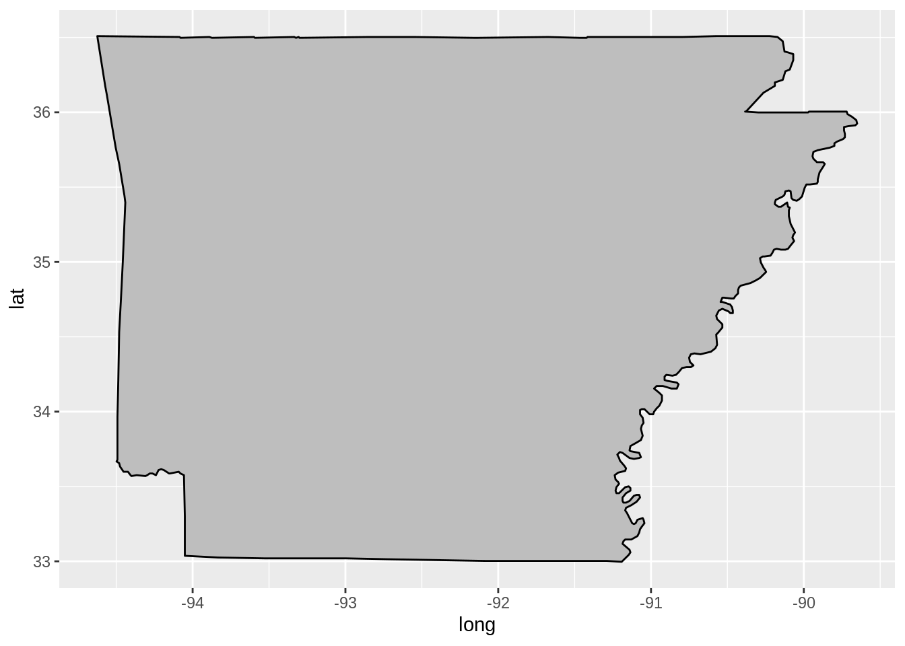

The ggplot2 library in R has given R the functionality to create maps that rival those produced in full GIS systems like ArcGIS and QGIS. To help you produce your own maps in R, I’m sharing my basic system for generating maps that I use to create Arkansas data visualizations.
To start we use the R library ggmap to load in the polygon data for our area of interest. The ggmap library holds many of the basic shapefiles that we would need to produce maps in R, but you can also directly import shapefiles that are used in other GIS programs.
Here we call the map_data function to load in the USA state lines as Polygons, then subset out the region of interest. Here we subset Arkansas. We load and subset the county lines seperately so that we can give them distinct colors when we start producing our maps.
library(ggplot2)
library(ggmap)
#get state lines, county lines, and subset arkansas
state <- map_data("state")
state <- subset(state,region=="arkansas")
county <- map_data("county")
county <- subset(county,region=="arkansas")names(state)## [1] "long" "lat" "group" "order" "region" "subregion"names(county)## [1] "long" "lat" "group" "order" "region" "subregion"Now that we have our shapefiles we can start producing maps. The system for creating maps in ggplot2 is the same as producing non-geographic plots.
ggplot(data = state, mapping = aes(x = long, y = lat, group = group))Oh! We’ve loaded the shapefile, but now we need to add a polygon object to display the information. In the ggplot2 system, we use the “+” operator to add to our map. Here we “+” a geom_polygon object to display the state shape information.
ggplot(data = state, mapping = aes(x = long, y = lat, group = group)) +
geom_polygon(color = "black", fill = "gray")
Well that’s a start! Let’s use the coord_fixed function to correct for the map projection. I’ve found that coord_fixed(1.3) works for Arkansas, but as you go north you can play with the number a bit to get a clean projection.
ggplot(data = state, mapping = aes(x = long, y = lat, group = group)) +
geom_polygon(color = "black", fill = "gray")+
coord_fixed(1.3)Now lets add some lines to our counties. Here we’re going to introduce a new geom_polygon object with data from our “county” variable, and then add a black line surrounding our state.
ggplot(data = state, mapping = aes(x = long, y = lat, group = group)) +
geom_polygon(color = "black", fill = "gray") +
coord_fixed(1.3) +
geom_polygon(data = county, fill = NA, color = "white") +
geom_polygon(color = "black", fill = NA)This simple map demonstrates how ggplot uses it’s “grammar of graphics” system to build geographic projections similar to how cartographers would build maps in physical space. We start by laying down the basic state shape, and then create new visual objects to lay on top. This builds up the map layer by layer.
In the following articles, I’ll show how we can use this basic map as a base to produce geographical data visualizations. Similar to how we produced this base map, we will build up a map by applying layers of information on top of one another.